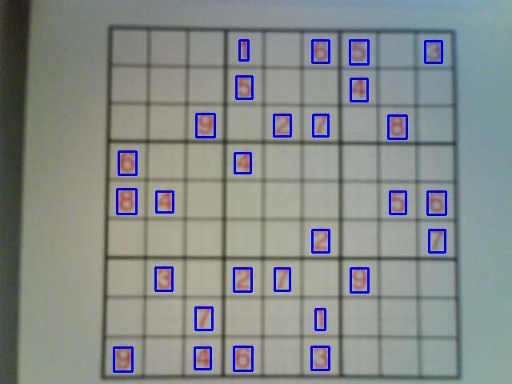

Publications - Sudoku Recognition with Deep Belief Network
I recently realized that I never talked about my publications on this website... I thought it was time to start. I'll start to write a few posts about my earlier publications and then I'll try to write something for the new ones not too late.
For the story, I'm currently a PHD student at the University of Fribourg, in Switzerland. My PHD is about the use of Deep Learning technologies to automatically extract features from images. I have developed my Deep Learning Library (DLL) project for this thesis. We have published a few articles on the various projects that we tackled during the thesis. I'll try to go in order.
At the beginning of the thesis, I used Restricted Boltzmann Machine and Deep Belief Network to perform digit recognition on images of Sudoku taken with a phone camera. We published two papers on this subject.
- Camera-based Sudoku Recognition with Deep Belief Network, in the Proceedings of the International Conference on Soft Computing and Pattern Recognition (SOCPAR-2014)
- Mixed Handwritten and printed digit recognition in Sudoku With Convolutional Deep Belief Network, in the Proceedings of the International Conference on Document Analysis and Recognition (ICDAR-2015)
The Sudoku grid and digits are detected using standard image processing techniques:
- The image is first converted to grayscale, then a median blur is applied to remove noise and the image is binarized using Adapteive Thresholding
- The edges are detected using the Canny algorithm. From these, the lines are detected using a Progressive Probabilistic Hough Transform
- Using a connected component analysis, the segments of lines are clustered together to detect the Sudoku Grid
- The cells are then detected inside the grid using the inner lines and contour detection is used to isolate the digits.
Here is one of the original images from our dataset:

Here are the detected characters from the previous image:
Once all the digits have been found they are passed to a Deep Belief Network for recognition. A Deep Belief Network is composed of several Restricted Boltzmann Machines (RBM) that are stacked. The network is pretrained, by training each RBM, in turn, with Contrastive Divergence. This algorithm basically trains each RBM as an auto-encoder and learns a good feature representation of the inputs. Once all the layers have been trained, the network can then be trained as a regular neural network with Stochastic Gradient Descent.
In the second paper, the images of Sudoku are containing both computer printed and handwritten digits (the grid is already filled). The other difference is that the second system used a Convolutional DBN instead of DBN. The difference being that each layer is a Convolutional RBM. Such a model will learn a set of small filters that will be applied to each position of the image.
On the second version of the dataset, we have been able to achieve 99.14% of recognition of the digits or 92.5% of fully-recognized grid with the Convolutional Network.
You can find the C++ implementation on Github.
If you want to have a look, I've updated the list of my publications on this website.
If you want more details on this project, don't hesitate to ask here or on Github, or read the paper :) The next post about my publications will probably be about CPU performances!
Comments
Comments powered by Disqus